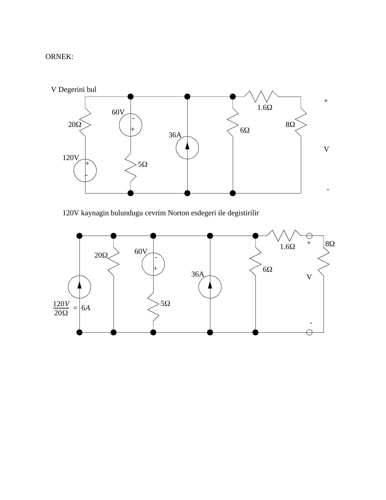

· EEM202
EEM202 Devre Teorisi II: Devre Çözüm Yöntemleri, Thevenin–Norton, Süperpozisyon ve Maksimum Güç (Fatih Tüysüz)
EEM202 – Devre Teorisi II · 28.05.2007 · 16.10.2026
Bu yazı, ders klasöründe "sorular3" adıyla saklanan, "Devre Çözüm Yöntemleri" başlıklı 11 sayfalık notu içeriyor (PDF Mayıs 2007; PDF künyesinde yazar olarak Fatih Tüysüz görünüyor). İkinci bölümdeki örnek çözümlerde "Şekil 7.3(c)", "Şekil 7.11(b)" gibi atıflar var; bu kısım bir ders kitabından derlenmiş olabilir. Not DC devreler üzerinden Thevenin–Norton eşdeğerlerini, süperpozisyonu ve maksimum güç aktarımını anlatıyor ve çözümlü örnekler veriyor; EEM202'deki fazör devrelerinde de aynı yöntemler kullanıldığı için tekrar amaçlı klasöre konmuş. Metin ve sonuçlar aşağıda aktarıldı; orijinal PDF yazının sonunda indirilebilir.
Bu içerik üçüncü taraf bir kaynağa aittir; arşiv ve nostalji amacıyla kaynak belirtilerek paylaşılmıştır. Hak sahibinin talebi hâlinde kaldırılır.
Thevenin ve Norton eşdeğer devrelerinin kullanımı
Thevenin devresi: V_s kaynağı ve seri R1. Norton devresi: I_s kaynağı ve paralel R2.
- İki devre de kısa devre yapılırsa: I_t = I_n ve V_t = V_n = 0 → V_s = R1·I_t, yani V_s/R1 = I_t = I_n.
- İki devre de açık devre yapılırsa: V_t = V_n ve I_t = I_n = 0 → V_t = V_s ve V_n = I_s·R2.
Bu temel eşitliklerden hem devre çözümünde hem de devre sadeleştirmede yararlanılır.
Örnek: kaynak dönüşümleriyle V geriliminin bulunması
Devrede 120 V kaynak ve 20 Ω, 60 V kaynak ve 5 Ω, 36 A'lik akım kaynağı, 6 Ω, ardından seri 1,6 Ω ve 8 Ω'luk yük var; 8 Ω üzerindeki V isteniyor.

- 120 V'luk kaynağın bulunduğu kol Norton eşdeğeriyle değiştirilir: 120 V/20 Ω = 6 A.
- İkinci gerilim kaynağı ve direnci de Norton eşdeğerine çevrilir: 60 V/5 Ω = 12 A (ters yönde).
- Bütün akım kaynakları ve paralel dirençler toplanır: 6 − 12 + 36 = 30 A; 1/(1/20 + 1/5 + 1/6) = 2,4 Ω.
- Akım kaynağı Thevenin eşdeğerine çevrilir: 30 A·2,4 Ω = 72 V.
- Seri dirençler toplanır (2,4 + 1,6 = 4 Ω) ve gerilim bölücüyle V = 72·8/(8 + 4) = 48 V bulunur.
Süperpozisyon
Birden fazla kaynağın bulunduğu devrelerde kullanılabilen basit bir tekniktir:
- Devredeki bir kaynağı seç; onun dışındaki bütün akım kaynaklarını açık devre, bütün gerilim kaynaklarını kısa devre yap.
- Devreyi normal bir devre gibi analiz et.
- Sonraki kaynağı seç ve ilk adıma dön.
- Her bir kaynak için bulunan sonuçları topla.
Örnek
100 V'luk kaynak ve 20 Ω, 40 Ω'luk direnç (V bu direnç üzerinde), 10 Ω ve 2,5 Ω; 20 Ω ile 10 Ω'un birleştiği iki düğüm arasında 6 A'lik akım kaynağı.
- a) Yalnız akım kaynağı (gerilim kaynağı kısa devre): 20 ∥ 40 = 13,3 Ω; 10 + 13,3 = 23,3 Ω ile 2,5 Ω paralel: 1/(1/2,5 + 1/23,3) = 2,26 Ω. Akım kaynağının uçlarındaki gerilim 6·2,26 ≈ 13,5 V; gerilim bölücüyle V = 13,5·13,3/(10 + 13,3) ≈ 7,73 V.
- b) Yalnız gerilim kaynağı (akım kaynağı açık devre): 40 ∥ (10 + 2,5) = 9,52 Ω; V = 100·9,52/(20 + 9,52) = 32,25 V.
- c) Toplam: V = 7,73 + 32,25 = 40 V
Not: Notta (a) şıkkında "V_s = 6(2,2) = 7,73 V" ve "V = 13,5 V" yazılmış; iki değerin yeri karışmış. Doğrusu V_s = 6·2,26 ≈ 13,5 V ve V ≈ 7,73 V'tur (son toplam 40 V doğru). (b) şıkkında "akım kaynağı kısa devre edilir" denmiş; yöntemin kuralı gereği ve şekilde görüldüğü gibi akım kaynağı açık devre edilir.
Maksimum güç aktarımı
Bir devreye yük bağlanırken aktarılacak gücün maksimum olması amaçlanır. V_s ve R_s kaynağa ait olmak üzere:
- I = V_s/(R_s + R_L), V_L = I·R_L
- P_L = I·V_L = [V_s/(R_s + R_L)]²·R_L
- ∂P_L/∂R_L = 0 → R_L = R_s (maksimum güç transferi için)
Örnek çözümler
Soru 1: R3 akımı (süperpozisyon)
U1 = 20 V ve U2 = 15 V'luk iki kaynak, R1 = R2 = 1 kΩ, R3 = 2,2 kΩ. R3 üzerinden geçen akım süperpozisyonla bulunuyor.
- Yalnız U1: R_T1 = R1 + R2∥R3 = 1 kΩ + (1 kΩ·2,2 kΩ)/3,2 kΩ = 1,69 kΩ; I_T1 = 20 V/1,69 kΩ = 11,8 mA; akım bölücüyle I_3(1) = (1 kΩ/3,2 kΩ)·11,8 mA = 3,69 mA
- Yalnız U2: R_T2 = R2 + R1∥R3 = 1,69 kΩ; I_T2 = 15 V/1,69 kΩ = 8,88 mA; I_3(2) = (1 kΩ/3,2 kΩ)·8,88 mA = 2,78 mA (ters yönde)
- I_3 = 3,69 − 2,78 = 0,91 mA (910 µA); pozitif çıkması akımın U1'in akıttığı yönde olduğunu gösteriyor.
Soru 2: 8,65 Ω'luk dirençteki akım (Thevenin)
20 V kaynak, 5 Ω ve 15 Ω; 10 V kaynak, 2 Ω ve 8 Ω; iki tarafın A ve B düğümleri arasında 8,65 Ω.
- Akımı bulunacak direnç çıkarılır, uçlar A ve B olarak adlandırılır. Gerilim bölücüyle U_A = 15/(5 + 15)·20 = 15 V, U_B = 8/(8 + 2)·10 = 8 V → U_TH = U_A − U_B = 7 V
- R_TH = 5∥15 + 2∥8 = 3,75 + 1,6 = 5,35 Ω
- I = 7 V/(5,35 Ω + 8,65 Ω) = 0,5 A
İndirilebilir dosya
11 sayfalık orijinal PDF aşağıdan indirilebilir.